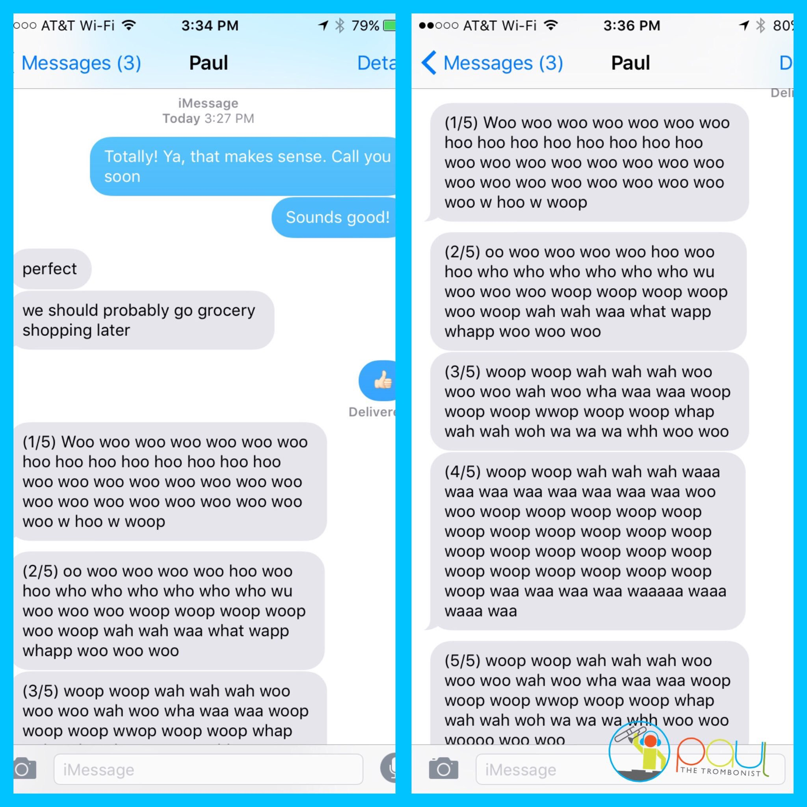
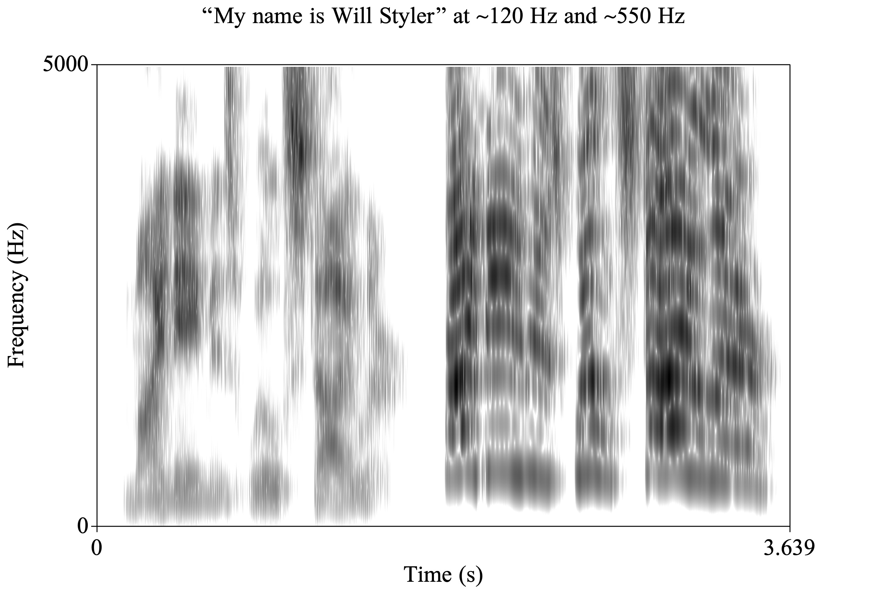
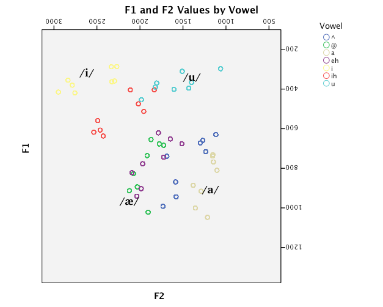
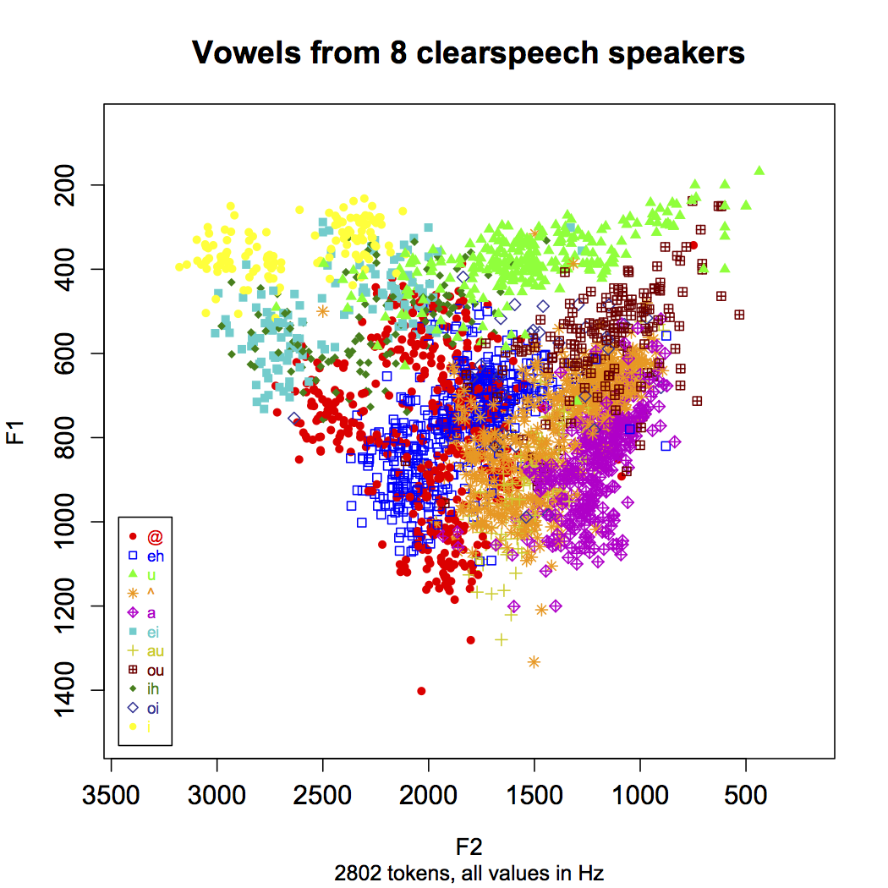

### Sound Compression (Again, Shpongle 'Nothing is something worth doing') Uncompressed WAV <audio controls src="phonmedia/nothingsomething.wav"> 320kbps mp3 <audio controls src="phonmedia/nothingsomething320kbps.mp3"> 192kbps mp3 <audio controls src="phonmedia/nothingsomething192kbps.mp3"> 128kbps mp3 <audio controls src="phonmedia/nothingsomething128kbps.mp3"> --- ### Sound Compression (Again, Shpongle 'Nothing is something worth doing') Uncompressed WAV <audio controls src="phonmedia/nothingsomething.wav"> 64kbps mp3 <audio controls src="phonmedia/nothingsomething64kbps.mp3"> 48kbps mp3 <audio controls src="phonmedia/nothingsomething48kbps.mp3"> 32kbps mp3 <audio controls src="phonmedia/nothingsomething32kbps.mp3"> 8kbps mp3 <audio controls src="phonmedia/nothingsomething8kbps.mp3"> --- # Friends don't let friends compress important audio! --- # The problem is with speech recognition ### Will Styler - LIGN 6 --- ### First an important program note - Jewelry of text in today's presentation is the unedited output of Apple speech recognition - <correct> "The majority of text..." </correct> - God help us all --- ### today's plan - detecting speech is hard - Noise - Homophones - Vocabulary and limited training data - Variability in Speech - Speaker variability --- ## Detecting speech is hard --- > Yoshihisa Ishikawa's one-night stay at a robot-staffed hotel in western Japan wasn't relaxing. He was roused every few hours during the night by the doll-shaped assistant in his room asking: "Sorry, I couldn't catch that. Could you repeat your request?" By 6 am, he realized the problem: His heavy snoring was triggering the robot. [Source](https://www.efe.com/efe/english/technology/strange-robot-hotel-in-japan-loses-love-for-robots/50000267-3866728) ---  --- ## Noise --- ### Noise - Speech tools are expected to work anywhere - Headphones - Traffic - MusicPlaying in the background --- ### Tools for Defeating noise - Many tools are used - A raise of multiple microphonesTo localize sound - Amplitude detectionTo identifyThe target speaker - Filtering to removeEchoes and background noise - Deep learning systems design to enhance speech - [See this paper from Apple on the topic](https://machinelearning.apple.com/2018/12/03/optimizing-siri-on-homepod-in-far-field-settings.html) --- ### Not all noises equal - It's easier to removeI Squealed in ago - <correct>It's easier to remove a squeal than a goat</correct> - Multiple close talkers present major problems - I am putting noise can always win - <correct>"High amplitude noise can always win"</correct> --- ### Noise removal is an boring problem - Common to many sound tasks - The crucial to making a working system --- ## Homophones --- ## Homophones Two words which are spelled differently, with different meanings, and the same sounds --- ### Example homophones <correct>For this slide, I cheated with the keyboard</correct> - then/than - their/there/they're - Will/we'll - Genes/Jeans - Lift/Lyft - Outtie/Audi - Lie/Lye --- --- ### On the phones present a major problem for speech recognition - Humans use meaning to disambiguate - He stole a walk from the Chinese restaurant - He live forever, it must be good genes - Use lie to make so - <correct>"He used lye to make soap" - Without knowledge of the world, ASR systems can't cheat --- ### Dealing with homophones - Probability models - Will get into these laterIn the quarter - QuoteWhat's the probabilityOf this word, given the other oneQuote - 🤦♂️ - Domain specific knowledge - How likely is this person to talk about jeansVersus jeans - Medical versus versus legal vs. general purpose dictation --- ### This is a problem that might need a IAI - There're a number of bees in speech recognition --- ## Vocabulary And limited training data --- ### There are many more words than we can train for - Some estimate the number of words80 speakers no between 25 and 30,000 - Much larger in specific domains - E.g. medical or legal language - Names and foreign borrowingsAdd additionalComplexity --- ### Testing Vocabulary - Bill frequency Castrol coefficient (<correct>MFCC</correct>) - Dyshidrotic eczema - proof seven and presumption great hearing - <correct>"Proof Evident, Presumption Great Hearing"</correct> - Adenocarcinoma arising into pavilions at know - <correct>Adenocarcinoma arising in tubovillious adenoma</correct> - "The wallet that says badass motherfucker on it" - The Dalai Lama,Fidel Castro,Barack Obama,Zygmunt Fry Singer,Yelling at people can bitch,Gabriella Italian - <correct>"The Dalai Lama, Fidel Castro, Barack Obama, Zygmunt Frajzyngier, Jelena Krivokapic, Gabriella Caballero"</correct> --- ### Names are very hard > "... again, this is Melinda Night, calling for a reference check for Eliza colonoscopy" - Siri did not understand 'Eliza Kolmanovsky' - Whoops! --- ### Methods of coping with vocabulary issues - Packaging your product for specific domains - Mining existing data from the customer - IntegratingAddress book information for name recognition - Fuzzy searching usingA list of possibilities --- ## Speech Variability --- ### Even for a single person,Speech berries - Changes in tempo - Changes in volume - Changes in pitch - Changes in dialect - Changes in degree of articulation --- ## Hyperarticulation Producing speech With an unusually Hi clarity and articulation --- ## Hypo articulation Producing speech with minimal effort And a minimally distinct gestures --- ### your training data dictates the kind of speech you can recognize - if you trained only on conversational casual data you're only effective there - if you train on people reading books aloud in a sound booth, that's what you'll be best at - you need to choose training data that reflects the task well --- ### Pitch Differences  --- ### You sound different at 2 AMThen in class - ASR needs to accommodateTo all states of your voice - You can't learn to specificallyWhat you Soundlike --- ## Speaker variability --- ### People differ substantially in terms of their speech - Differences in pitch - Differences in dialect - Differences inLanguage background - Differences in vocal track size and anatomy - <correct>Tract, damnit</correct> --- ## CaseStudyVal perception --- <correct> This next section is copied in from another presentation, so no speech-rec errors</correct> --- <img class="r-stretch" src="phonmedia/vowelformants.gif"> <small>Different American English vowels, as spoken by a male speaker</small> --- ### Vowel formants are reflections of articulations - They vary depending on the tongue's position - ... as well as the size and shape of the talker's head - *Different formants from the same speaker mean different vowels* - ... kind of ---  --- ## But it's even worse than it seems... --- ### Moment-to-moment Vowel Variation * Even the same speaker will have variation from moment to moment * Sometimes we misarticulate, accidentally making the wrong vowel quality * Or we talk with food in our mouths, producing different resonances * Or sometimes, we’re just plain lazy * This leads to constant and massive changes in vowel production --- ---  --- <img class="r-stretch" src="humorimg/trainwreck.png"> --- ### Every person you've ever talked with has had different vowel formant patterns * ... and yet, we understand each other, somehow --- ### How do we accomplish this perceptual magic? --- ### Dealing with vowel variability * We stack the deck in our favor in the grammar of the language * We use non-formant-related cues such as vowel length * We adjust to individual speakers (or vocal tracts) through Speaker Normalization - We don't yet understand how this works * We attend to context --- ## Context helps! --- ### The Role of Context * Context helps us to understand words even if the phonemes are acoustically ambiguous * Easier to understand “Hello” in its normal conversational context * If you’re not expecting a word, you’ll have to fight harder to understand it. * “Hi, John! Partial Nephrectomy!” * “Ohh, Invasive Adenocarcinoma arising in tubulovillious adenoma” * Nobody runs into rooms and shouts "bat!" --- <correct>Back to ASR-based lecture-writing. Nooooooo. </correct> --- ### ASR systems perform normalization - Sometimes it's explicitParenthesisQuoteFirst, read this paragraph for meQuote parenthesis - Sometimes assumptions are made on the basis of the pitchAnd other than domestic factors - Sometimes it emerges from the data --- --- ### Sometimes it can be avoided English vowels different duration Context can be very very helpful The more you can predict what is being said,The better --- ### ChildrenAre extra awful - Incredibly high pitches - Small vocal tracks - PoorSpeech abilitiesComparatively - Just bad communicators in general - Yet we expect a laxative work just fine - <correct>"Yet we expect Alexa to work just fine"</correct> --- ### Speaker variability is the biggest problem that ASR faces Every single user sounds different,But expect the same results This is absolutely amazing,And terrifying --- ### Wrapping up - Speech recognition is really hard - There are many sources of noise, and ways to deal with it - Homophones cause amazingAnd terrible problems - Your system is only as good as its vocabulary - Speech is very variable within speakers - Speech varies across speakers as well --- ## For next time <audio controls src="comp/ttsintro.mp4"> --- <huge>Thank you!</huge>